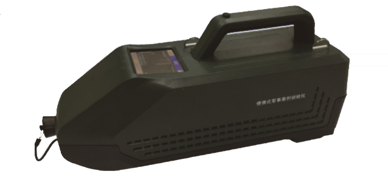

|  |
Product Instruction
EI-HCW300 is an on-line, accuracy and extremely sensitive
detection device for trace chemical warfare agents and toxic
industrial chemicals based on Ion Mobility Spectrometry (IMS)
technology, which is independently developed. It has many advanced
functions such as optional sensitivity level, hot-start, suitable
for highlands advantages as easy operation, low-cost consumables
and convenient maintenance.
EI-HCW300 has been applied many patents and inspected by
the National Quality Supervise Center of Safety Protection and
Alarming System, it has been widely applied for airport, customs,
frontier defense, police, national defense, smuggling suppression,
fire protection and army department etc.
|